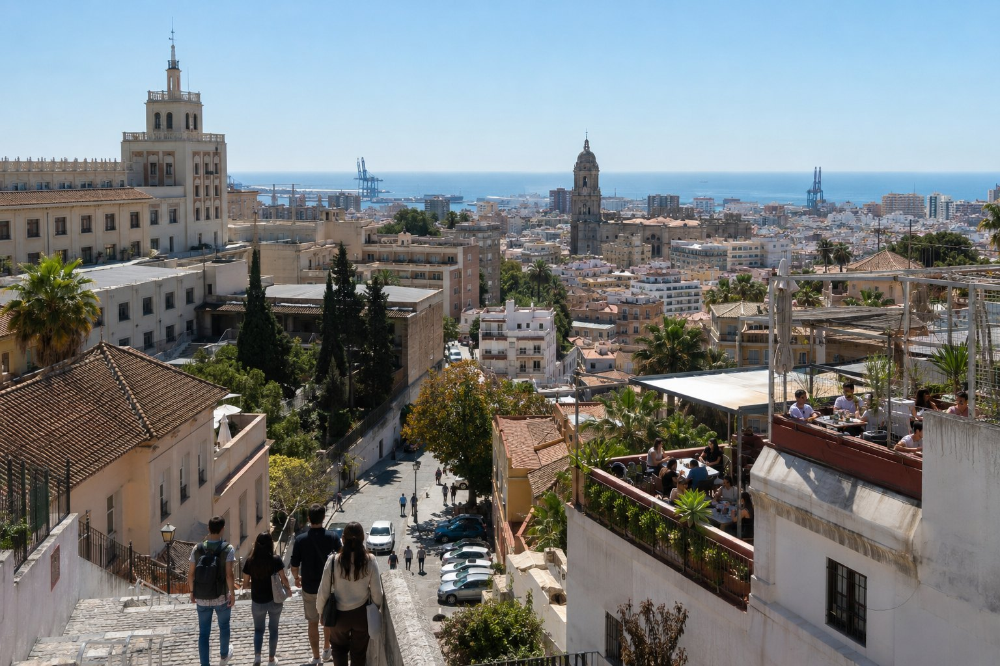

1
JPG klar
malaga
El Ejido – Universitetet och takterrasserna
bilder/web-ready/malaga/el-ejido-universitet-takterrasser-malaga.jpg
Prompt
Publishing metadata
- Alt
- El Ejido – Universitetet och takterrasserna i Málaga med människor och realistisk resemiljö
- Caption
- El Ejido – Universitetet och takterrasserna i Málaga
- SEO
- En realistisk resebild från El Ejido ovanför Málagas historiska centrum. Bilden visar El Ejido – Universitetet och takterrasserna i Málaga under relevant resesäsong med naturligt folkliv och tydliga platsdetaljer som gör reseguideavsnittet mer visuellt trovärdigt.
- Target
- https://malaga.se/var-ska-man-bo-i-malaga/ / el-ejido-universitetet-och-takterrasserna